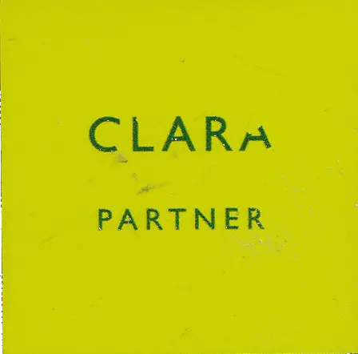
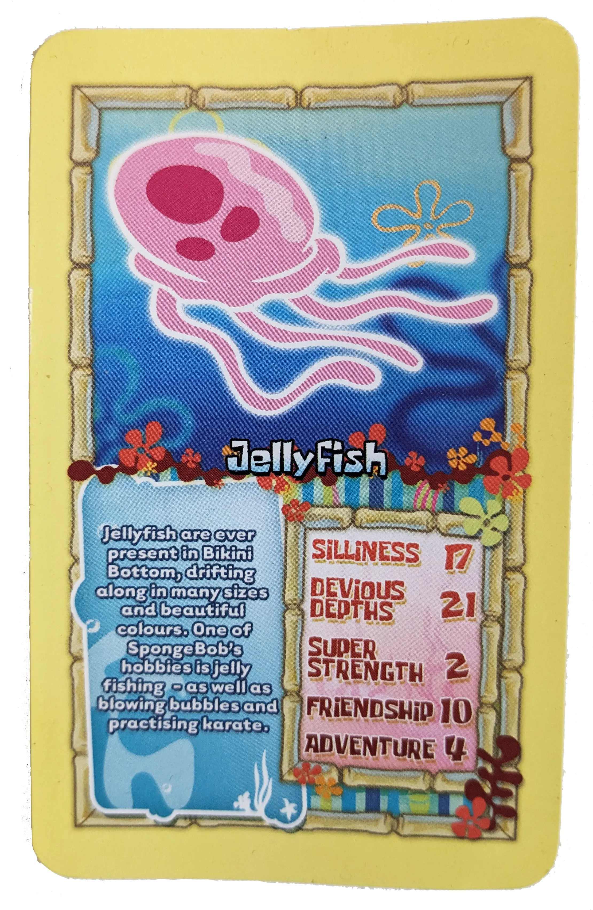
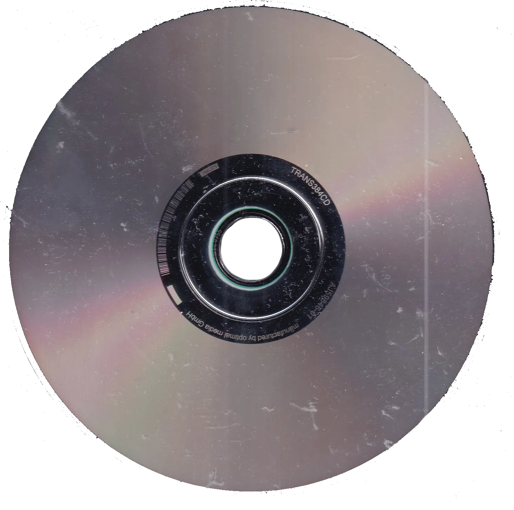
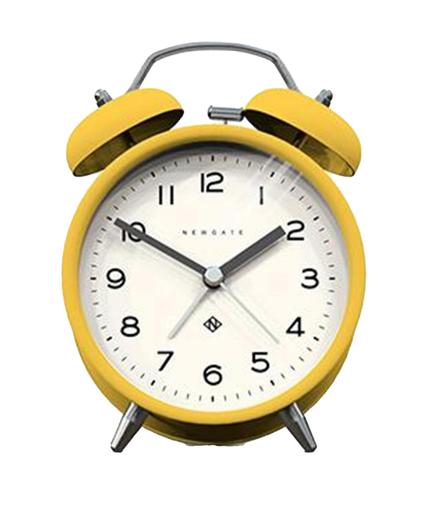
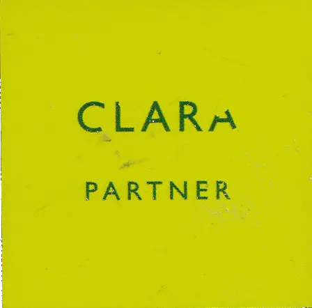
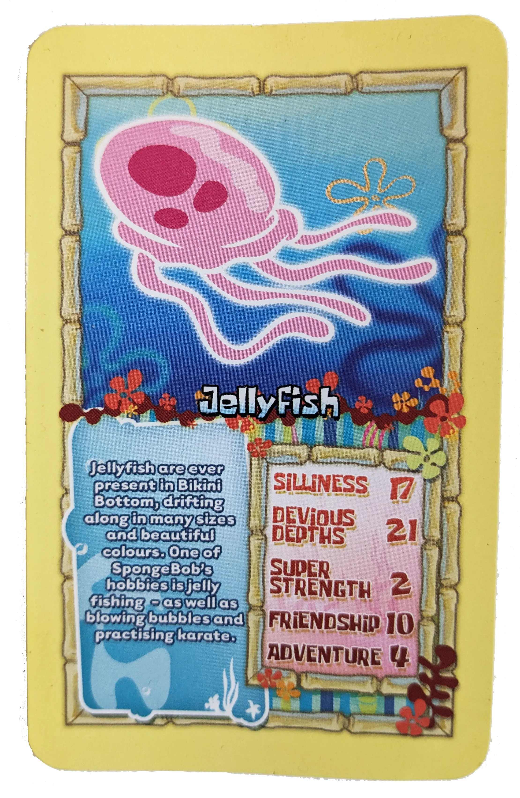
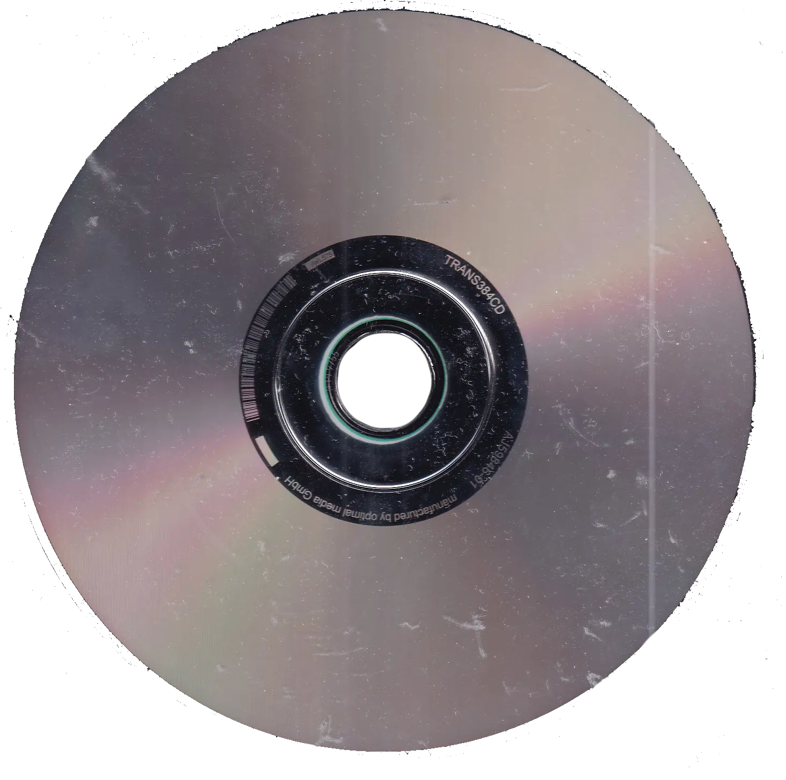
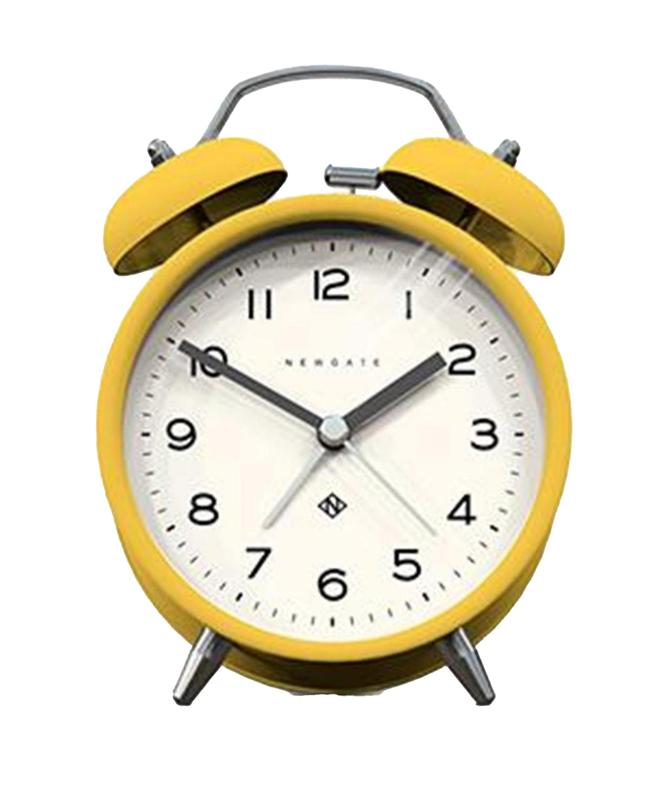

I am a London & Essex-based creative with a passion for spreading joy, be it through a printed page, through copy that brightens your day, or through direction of an engaging multimedia project; I don’t discriminate!
 







In my practice, experimentation is vital, drawing on my natural resourcefulness and exploring different perspectives to bring new life to ideas. Innovative concepts are my jam! I value originality, and no two works of mine are ever the same. I am always looking to better myself and my skills, currently indulging in mixed media, like collage and photography, and I am a typography nerd. Organic and playful design is what I do; a harmony of powerful words and images is the balance I try to find. I love to celebrate the inner child through my creative pursuits and bring out innate joy and empathy in all of us.
Let's chat: drop me an email, take a look at my Instagram, or connect with me through LinkedIn! The choice is yours!
Here's some pics I took of my lovely hometown, now city, of Southend-on-Sea